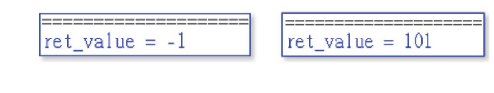
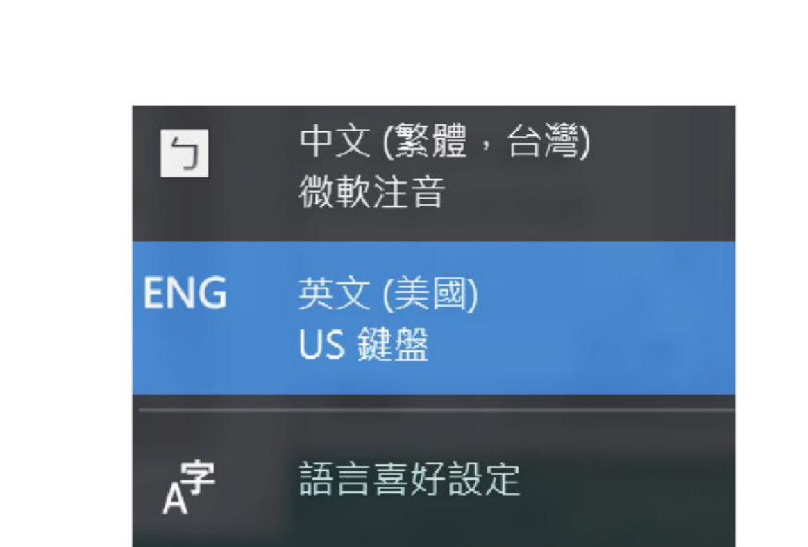
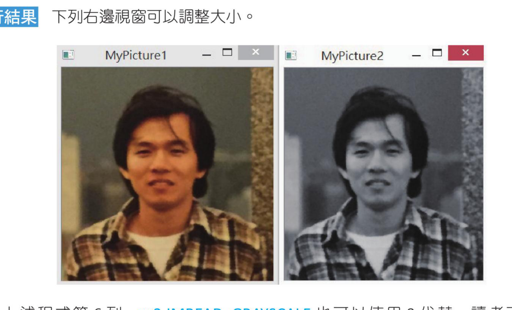
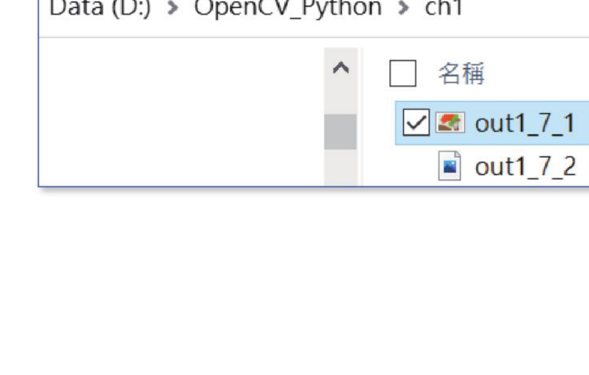
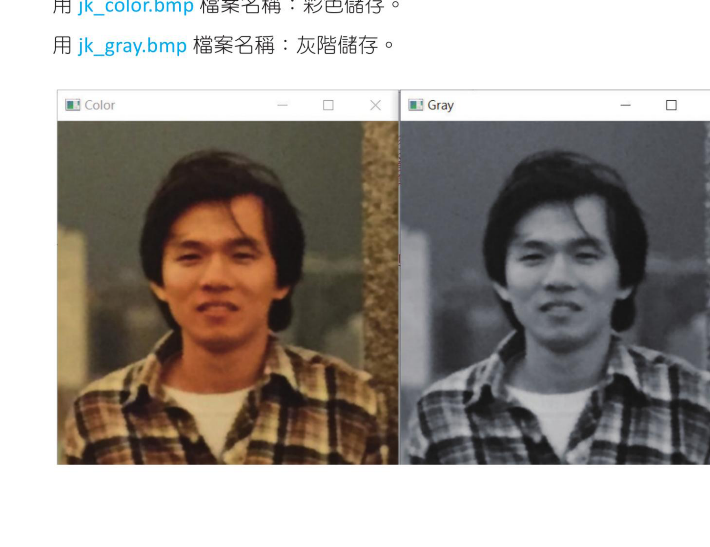

图像的读取、显示与保存
- 读取图像
- 显示图像
- 保存图像
- 认识图像的属性
建议阅读书籍
这本书主要是讲解使用 Python 搭配 OpenCV 模块，完整讲解图像处理至 AI 视觉的知识，建议读者要有 Python 基础知识。同时 OpenCV 是使用 Numpy 模块的数组概念处理图像的文件，所以也建议要有 Numpy 的基础知识。
程序导入 OpenCV 模块
在使用 OpenCV 前，需要安装 OpenCV，读者可以参考附录 A。设计程序前需要使用下列方式导入 OpenCV 模块。
读取图像文件
1-2-1 图像读取 imread() 的语法
OpenCV 读取图像文件是使用 imread() 函数，此函数的语法如下：
- 上述
imread()函数有返回值 image，所返回的是读取到的对象。如果读取失败，则返回值是None，常见的错误是图像对象名称或路径错误。 - 第 1 个参数 path 是指含路径的图像文件，如果省略路径就是指目前工作的文件夹。
- 第 2 个参数 flag 是可选参数，可以称是图像旗标，这是命名常量主要是说明读取图像文件的类型。如果有省略，表示依原图像格式读取。
| 命名常量 | 值 | 说明 |
|---|---|---|
IMREAD_UNCHANGED |
-1 | 依原图像读取图像，保留 alpha 透明度通道 |
IMREAD_GRAYSCALE |
0 | 将图像转为灰度再读取 |
IMREAD_COLOR |
1 | 将图像转为三通道 BGR 彩色再读取 |
IMREAD_ANYDEPTH |
2 | 当图像有 16 位或 32 位时，返回相对应深度的图像。否则，将图像转为 8 位 |
IMREAD_ANYCOLOR |
4 | 以所有可能的颜色读取图像 |
IMREAD_LOAD_GDAL |
8 | 使用 GDAL 驱动程序读取图像 |
IMREAD_REDUCED_GRAYSCALE_2 |
16 | 将图像转为灰度，同时缩小至原先的 1/2 |
IMREAD_REDUCED_COLOR_2 |
17 | 将图像转为三通道 BGR 彩色，同时缩小至原先的 1/2 |
IMREAD_IGNORE_ORIENTATION |
128 | 不以 EXIF 方向旋转图像 |
cv2.IMREAD_GRAYSCALE。
程序示例 ch1_1.py：观察读取文件的返回值
读取失败 : <class 'NoneType'>
1-2-2 可读取的图像格式
OpenCV 的 cv2.imread() 可以读取的常见图像格式有下列几种：
- Windows 的位图：*.bmp
- JPEG 格式图：*.jpg、*.jpeg、*.jpe
- TIFF 格式图：*.tiff、*.tif
- PNG 格式图：PNG 是 Portable Network Graphics 的缩写，*.png
显示图像与关闭图像窗口
OpenCV 有提供几个与显示图像有关的函数，下列将一一解说。
1-3-1 使用 OpenCV 显示图像
OpenCV 可以使用 cv2.imshow() 将读取的图像对象显示在 OpenCV 窗口内，此函数的使用格式如下：
- window_name：是未来要显示的窗口标题名称。
- image：是指要显示的图像对象。
上述 imshow() 函数实际上是执行下列 2 个步骤：
- 创建标题是 window_name 的窗口，所创建的窗口无法更改大小。
- 将 image 图像对象在 window_name 窗口显示。
程序示例 ch1_2.py：显示图像
1-3-2 关闭 OpenCV 窗口
将图像显示在 OpenCV 窗口后，若是想删除窗口可以使用下列函数。
程序示例 ch1_3.py：图像闪一下随即关闭的应用
1-3-3 等待按键的事件
OpenCV 的 cv2.waitKey() 函数会等待按键事件，语法如下：
- ret_key：是返回值，如果在指定时间没有按下键盘的键，则返回值是 -1。如果有按下键盘的键，则返回值是按键的 ASCII 码。常见的键盘按键对应的 ASCII 码值如下：
Enter：13Esc：27Backspace：8Space：32 - delay：单位是毫秒，每 1000 毫秒等于 1 秒。
使用 OpenCV 显示图像时可以使用 cv2.waitKey(delay) 设置图像显示的时间，或是在显示时间内按键盘的任意键，也可以让 cv2.waitKey() 函数执行结束。若是 delay=0 或是省略，代表无限期等待。若是设为 delay=1000 相当于有等待 1 秒的效果。
程序示例 ch1_4.py：让图像持续显示，直到按下右上方的关闭钮
程序示例 ch1_5.py：让图像显示 5 秒或是有键盘按键发生
直接按键盘 e 的结果：ret_value = 101

ret_value = -1；右图为直接按 e 键的结果 ret_value = 101（e 的 ASCII 码）。截图见原书第 1-6 页。
如果输入是一般键盘键，可以使用 ret_value == ord(key) 判断是否是按了特定的键盘字符。
程序示例 ch1_5_1.py：让图像持续显示，直到按下键盘的 q 或 Q 键
1-3-4 创建 OpenCV 图像窗口
使用 OpenCV 的 imshow() 函数显示图像时，默认系统会创建一个图像窗口，这个默认所创建的图像窗口，窗口大小是固定，无法更改。不过 OpenCV 也有提供 namedWindow() 创建未来要显示图像的窗口，它的语法如下：
- window_name：是未来要显示的窗口名称。
- flag：是指窗口旗标参数，可能值如下：
WINDOW_NORMAL：如果设置，用户可以自行调整窗口大小。WINDOW_AUTOSIZE：系统将依图像调整窗口大小，用户无法调整窗口大小，这是默认。WINDOW_OPENGL：将以 OpenGL 支持方式打开窗口。
程序示例 ch1_6.py：以彩色和灰度显示图像的应用

上述程序第 6 行，cv2.IMREAD_GRAYSCALE 也可以使用 0 代替，读者可以参考 ch1_6_1.py，可以获得一样的结果。
保存图像
OpenCV 可以使用 imwrite() 保存图像，它的使用语法如下：
- 第 1 个参数 path 是保存保存结果的图像文件名称，此名称含路径，如果省略路径就是指目前工作的文件夹。此外，除了可以使用相同的图像格式保存外，也可以使用不同的图像格式保存图像文件，例如：jpg、tiff、png … 等。
- 第 2 个参数 image 是要保存的图像对象。
如果保存图像成功会返回 True，否则返回 False。
程序示例 ch1_7.py：将 jk.jpg 保存成 out1_7_1.tiff 和 out1_7_2.png
保存文件成功

1：分别以彩色和灰度读取自己的图像，在屏幕显示，同时以下列方式保存。
- 用
jk_color.bmp文件名称：彩色保存。 - 用
jk_gray.bmp文件名称：灰度保存。
